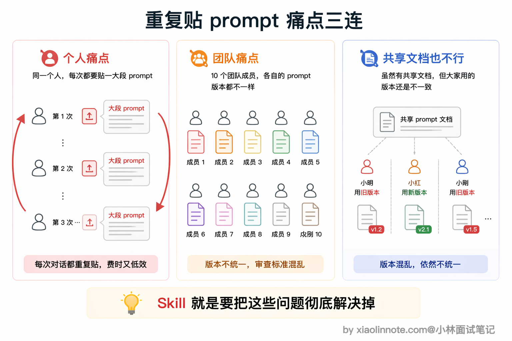
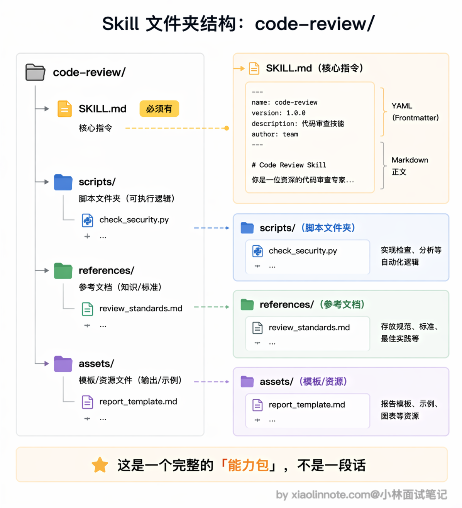
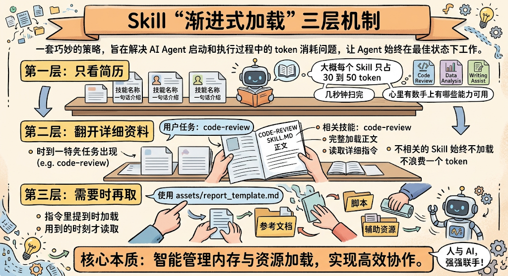
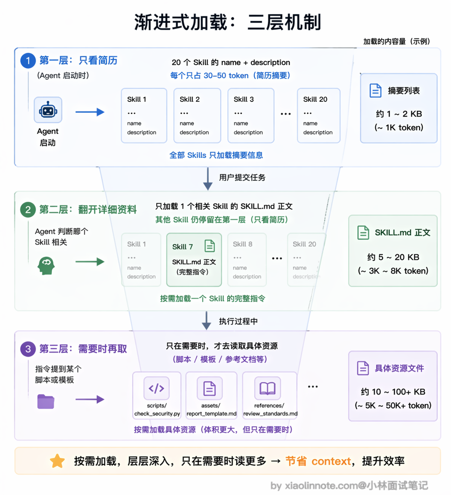
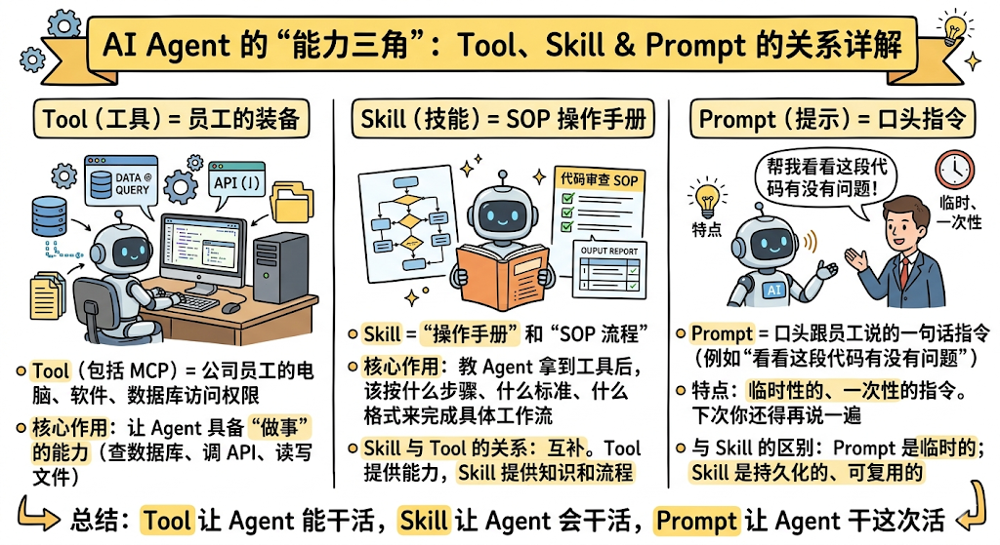
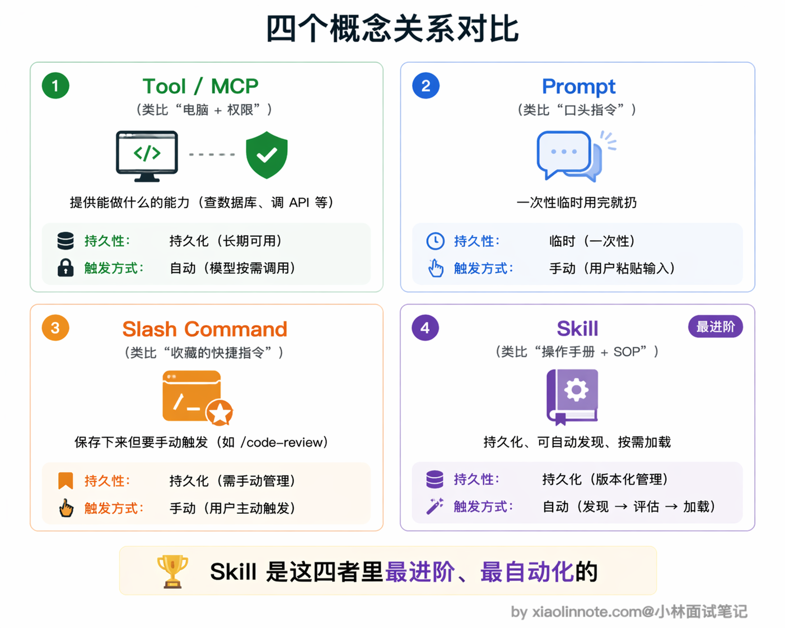
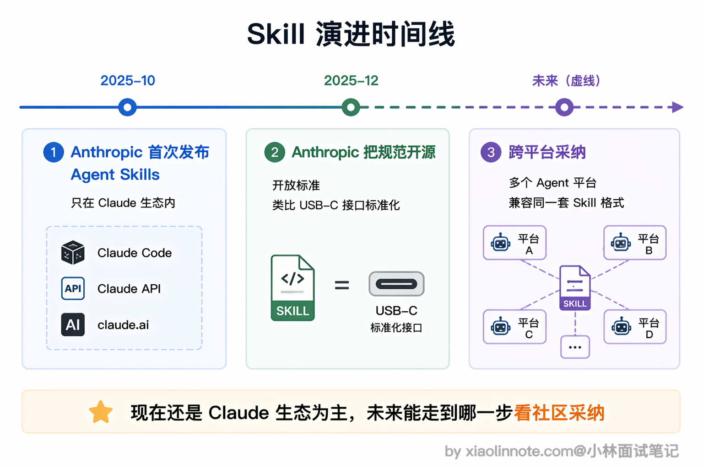

本篇目录
9. Skill 是什么？
👔面试官：说说 Agent Skill 是什么？
🙋♂️我：Skill 就是提示词嘛，把常用的 prompt 保存下来，下次用的时候直接贴上去就行了，跟复制粘贴差不多。
👔面试官：就是「复制粘贴 prompt」？那我每次开新对话都要手动贴一遍，团队里十个人每个人贴的还不一样，这算什么「能力」？你觉得这样能规模化吗？
🙋♂️我：那……可以把 prompt 写到一个共享文档里，大家统一从那里复制？
👔面试官：你说的是人工流程管理，不是技术方案。Skill 的核心不是「保存 prompt」，而是把指令、脚本、模板打包成一个模块，Agent 能自动发现它、按需加载它，根本不需要人手动去贴。你连 Skill 和普通 prompt 的区别都没搞清楚，更别提它和 MCP 工具的关系了。
好，这段对话踩的雷很典型，很多人一上来就把 Skill 等同于「保存好的 prompt」。下面我把 Skill 的本质和设计思路拆开讲清楚。
💡 简要回答
Agent Skill 是把「指令、脚本、模板」一体化打包成可复用能力包的机制，关键在于三件事：Agent 能自动发现它、按需加载它、在需要时调用里面的脚本和资源。它不只是「存 prompt」，而是一份 Agent 能自己翻阅的「操作手册 + 工具箱」。每个 Skill 是一个文件夹，里面有一份 SKILL.md 指令文件，还可以带上脚本、模板、参考文档这些资源。
它和普通 prompt 最大的区别是：Skill 能被 Agent 自动发现和按需加载，不用你每次手动输入；和 MCP 工具的区别是：MCP 给 Agent 提供外部工具和数据的访问能力，而 Skill 教 Agent 拿到这些工具和数据之后该怎么用。
Anthropic 在 2025 年 10 月推出了 Agent Skills，同年 12 月把规范作为开放标准发布出来，允许其他 Agent 平台按照这套格式来兼容 Skills 生态。
📝 详细解析
为什么需要 Skill？从「重复贴 prompt」的痛点说起
你一定遇到过这种情况：每次让 AI 帮你做代码审查，你都要贴一大段指令，告诉它「检查这几类问题、用这种格式输出、重点关注安全漏洞」。第一次贴的时候还好，第二次、第三次你就开始烦了，每次新对话都要从头贴一遍，漏掉某个细节就会导致输出质量不稳定。
这还只是一个人的情况。如果是团队协作呢？十个人做代码审查，每个人贴的 prompt 都不一样，有的人关注安全，有的人关注性能，审查标准完全没法统一。

你可能想到把 prompt 写到一个共享文档里让大家复制，但这本质上还是靠人工去维护和执行，版本一多就容易乱，更新了文档但有人还在用旧版的 prompt，质量把控根本做不到。
Skill 要解决的就是这个问题：把那些你反复在用的指令、流程、模板，打包成一个标准化的模块，Agent 自己知道什么时候该用它、怎么用它，不再依赖你手动复制粘贴。
Skill 的结构长什么样
一个 Skill 说白了就是一个文件夹，里面最核心的是一份叫 SKILL.md 的文件，再加上一些可选的辅助资源。结构很直观：
code-review/ # Skill 文件夹，名字就是这个 Skill 的标识
├── SKILL.md # 核心指令文件（必须有）
├── scripts/ # 可选：可执行的脚本
│ └── check_security.py # 比如一个安全检查脚本
├── references/ # 可选：参考文档
│ └── review_standards.md # 比如团队的审查标准文档
└── assets/ # 可选：模板、资源文件
└── report_template.md # 比如审查报告的输出模板
SKILL.md 的内容分两部分。顶部是一段 YAML 格式的元数据，叫 frontmatter，声明这个 Skill 的名字和一句话描述；下面是正文，用 Markdown 写具体的指令和步骤。来看一个实际的例子：
---
name: code-review
description: "对代码进行全面审查，检查 bug、安全漏洞和性能问题，输出结构化审查报告"
---
# 代码审查 Skill
## 指令
### 第一步：理解代码上下文
阅读提交的代码，理解它的功能和所属模块，确认修改范围。
### 第二步：逐项检查
按以下维度逐一检查：
1. 功能正确性：逻辑是否有 bug，边界条件是否处理了
2. 安全性：是否有注入、XSS、权限绕过等漏洞
3. 性能：是否有 N+1 查询、不必要的循环、内存泄漏风险
4. 可读性：命名是否清晰，关键逻辑是否有注释
### 第三步：输出报告
使用 assets/report_template.md 的模板格式，输出结构化的审查报告。你会发现，这和普通 prompt 的区别就很明显了。普通 prompt 只是一段文字，用完就没了；而 Skill 是一个完整的文件夹，里面的指令、脚本、模板可以持续维护、版本管理，团队里所有人用的都是同一份。
渐进式加载：Skill 最聪明的设计
Skill 最让人眼前一亮的设计，不是「能打包」这件事本身，而是它的加载方式。
你可能会想，既然 Skill 可以打包那么多东西，Agent 启动的时候是不是要把所有 Skill 的内容全部读进来？想象一下这个账：假设你有 20 个 Skill，每个 Skill 的指令加上参考文档平均 2000 token，全部加载就是 4 万 token 打底。现在市面上常见的模型上下文窗口是 20 万 token，光 Skill 就吃掉了五分之一，剩下的要分给系统提示、对话历史、用户文件，留给模型真正思考的空间就很紧张了。更糟的是，这 20 个 Skill 里大部分在当前这一次任务里根本用不上，加载了也是白加载。
所以 Skill 用了一套叫「渐进式加载」（Progressive Disclosure）的三层机制来解决这个问题。

第一层是「只看简历」。Agent 启动的时候，只加载每个 Skill 的 name 和 description 这两个字段，大概每个 Skill 只占 30 到 50 个 token。这就像你面前摆了 20 份简历，每份只看名字和一句话介绍，几秒钟就能扫完，心里有数「我手上有哪些能力可以用」。
第二层是「翻开详细资料」。当用户提了一个任务，Agent 判断「这个任务跟 code-review 这个 Skill 相关」，这时候才会把 code-review 的
SKILL.md正文完整加载进来，读取里面的详细指令。不相关的 Skill 始终不会被加载，不浪费一个 token。第三层是「需要时再取」。执行过程中，如果指令里提到了「使用 assets/report_template.md 的模板」，Agent 才会在那个时刻去读取这个模板文件。参考文档、脚本这些辅助资源也是一样，用到的时候才加载。
这个设计用一个类比就很好理解：Skill 就像公司给新员工准备的入职手册。你入职第一天不会把整本手册从头到尾看完，而是先扫一眼目录，知道里面有「报销流程」「请假制度」「代码规范」这些章节就行了。等你真的要报销了，再翻开「报销流程」那一章仔细看。这样既不会信息过载，又确保你需要的时候能找到。

为什么这个设计这么重要？因为 context window 是 Agent 最宝贵的资源。如果把所有 Skill 的全部内容一股脑塞进去，真正有用的用户任务信息反而会被淹没，Agent 的注意力被分散，输出质量反而下降。渐进式加载的本质就是「让 Agent 只在需要的时候获取需要的知识」，这和人类的工作方式其实是一样的。
Skill 和 Tool、Prompt 分别是什么关系
这三个概念经常被混淆，但它们处于完全不同的层次，用一个类比就能讲清楚。

你可以把 Tool（包括 MCP 工具）想象成公司给员工配的电脑、软件和数据库访问权限。有了 Tool，Agent 就能「做事」，比如查数据库、调 API、读写文件。但光有工具不够，你给一个新人配了一台电脑和所有系统权限，他也不知道该按什么流程做代码审查，不知道先查什么、后查什么、用什么格式输出报告。
Skill 就是那份「操作手册」和「SOP 流程」。它教 Agent 拿到这些工具之后，该按什么步骤、什么标准、什么格式来完成一个具体的工作流。所以 Tool 和 Skill 的关系是互补的：Tool 提供能力，Skill 提供知识和流程。
那 Prompt 呢？Prompt 就像你口头跟员工说的一句话指令，比如「帮我看看这段代码有没有问题」。这句话说完就没了，下次你还得再说一遍。Prompt 是一次性的、临时的，而 Skill 是持久化的、可复用的。
还有一个容易搞混的是 Slash Command（斜杠命令）。Slash Command 也是把指令保存下来复用，但它必须由你手动触发，比如你得输入 /code-review 才能调用。而 Skill 可以被 Agent 自动发现和调用，Agent 看到你的任务后，自己判断「这个任务需要用 code-review Skill」，然后主动去加载和执行，不需要你告诉它该用哪个 Skill。这个自动发现的能力，就是 Skill 比 Slash Command 更进一步的地方。

Skill 从 Anthropic 走向开放标准
Agent Skills 最早是 Anthropic 在 2025 年 10 月推出的，一开始只在 Claude 自家的生态里用，覆盖了 Claude Code、Claude API 和 claude.ai 这三个入口。推出两个月后，Anthropic 做了一个很聪明的决定：在 2025 年 12 月把 Agent Skills 的规范作为开放标准发布出来，任何想做 Agent 平台的团队都可以按这个规范来实现自己的 Skills 支持。

为什么要把规范开放？核心原因是 Skills 的设计足够简单。一个 Skill 就是一个文件夹加一份 Markdown 文件，不需要安装特殊的运行时，不需要学新的编程语言，任何支持文件系统的 Agent 平台理论上都能实现这套格式。这种「零门槛」的设计让它有希望成为跨平台的通用约定。
你可能会问，开放成标准有什么好处？好处是你写一份 Skill，未来有机会在不同的 Agent 平台之间复用，而不是被某一家产品绑死。这就像 USB 接口一样，你买一根 USB-C 数据线，手机能用、电脑也能用，不用每个设备买一根专用线。Anthropic 想做的就是让 Agent Skills 朝着这个方向发展，虽然现在主要还是 Claude 生态在用，社区里也有项目开始探索在其他 Agent 平台上兼容这个格式，后续能走到哪一步还要看行业的采纳情况。
🎯 面试总结
回到开头踩的雷，最常见的误区就是把 Skill 等同于「保存好的 prompt」。面试回答这道题，第一个要说清楚的是 Skill 的本质：它不是一段 prompt，而是一个包含指令、脚本、模板的可复用能力模块，Agent 可以自动发现和按需加载。
第二个关键点是渐进式加载的设计。三层加载机制（只读元数据 -> 按需加载指令 -> 用到时才取资源）让 Skill 既能提供丰富的能力，又不会浪费宝贵的 context window 空间。这个设计思想在面试里说出来会很加分，因为它体现了你对「context 工程」的理解。
第三个要讲清楚的是 Skill 和其他概念的关系：MCP/Tool 提供外部工具和数据访问，Skill 提供用这些工具完成任务的知识和流程，两者互补；Prompt 是一次性的临时指令，Skill 是持久化的可复用模块；Slash Command 需要手动触发，Skill 可以被 Agent 自动发现。
最后可以加一句，Agent Skills 已经从 Anthropic 的产品功能发展成了开放标准（2025 年 12 月开源），目前主要在 Claude Code、Claude API、claude.ai 这三个入口上使用，社区也在探索把这个格式带到其他 Agent 平台，未来有望成为跨平台的能力模块约定。
对了，大模型面试题会在「公众号@小林面试笔记题」持续更新，林友们赶紧关注起来，别错过最新干货哦！